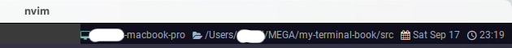
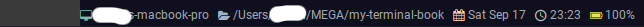

Right Status
これはもう手厚いサンプルが既に用意されているので、この通りに書けばバッチリです。やったね！
This method can be used to change the content that is displayed in the tab bar, to the right of the tabs and new tab button.
このメソッドを使用すると、タブバー内のタブと新規タブボタンの右側に表示される内容を変更することができます。
My Customize
まずは wez さんのサンプルコードをほぼ丸写しですが、一つずつ機能を分けます。
local function GetHostAndCwd(elems, pane)
local uri = pane:get_current_working_dir()
if not uri then
return
end
local cwd_uri = uri:sub(8)
local slash = cwd_uri:find '/'
if not slash then
return
end
local host = cwd_uri:sub(1, slash - 1)
local dot = host:find '[.]'
AddElement(elems, HEADER_HOST, dot and host:sub(1, dot - 1) or host)
AddElement(elems, HEADER_CWD, cwd_uri:sub(slash))
end
local function GetDate(elems)
AddElement(elems, HEADER_DATE, wezterm.strftime '%a %b %-d')
end
local function GetTime(elems)
AddElement(elems, HEADER_TIME, wezterm.strftime '%H:%M')
end
local function GetBattery(elems, window)
if not window:get_dimensions().is_full_screen then
return
end
for _, b in ipairs(wezterm.battery_info()) do
AddElement(elems, HEADER_BATTERY, string.format('%.0f%%', b.state_of_charge * 100))
end
end
wez さんのサンプルでは一度に取得していた date と time も分けちゃってます。
程度は分かりませんが、非効率ではあると思われるのでお好みで。
バッテリー表示については、わたしの場合はフルスクリーンの時だけ出しています。スクリーン状態は下記で取得できます。
The table has the following fields:
pixel_width, pixel_height, dpi, is_full_screen
テーブルには以下のフィールドがあります:
pixel_width, pixel_height, dpi, is_full_screen
ここではis_full_screenを使います。フルスクリーン時は true が返ります。
で、以下が足りていなかった定義です。
-- ここもやっぱりアイコン入れてます
local HEADER_HOST = { Foreground = { Color = '#75b1a9' }, Text = '' }
local HEADER_CWD = { Foreground = { Color = '#92aac7' }, Text = '' }
local HEADER_DATE = { Foreground = { Color = '#ffccac' }, Text = '' }
local HEADER_TIME = { Foreground = { Color = '#bcbabe' }, Text = '' }
local HEADER_BATTERY = { Foreground = { Color = '#dfe166' }, Text = '' }
local HEADER_KEY_NORMAL = { Foreground = DEFAULT_COLOR, Text = '' }
local HEADER_LEADER = { Foreground = { Color = '#ffffff' }, Text = '' }
local HEADER_IME = { Foreground = DEFAULT_COLOR, Text = 'あ' }
local function AddElement(elems, header, str)
table.insert(elems, { Foreground = header.Foreground })
table.insert(elems, { Text = header.Text .. SPACE_1 })
table.insert(elems, { Foreground = DEFAULT_COLOR })
table.insert(elems, { Text = str .. SPACE_3 })
end
引っ張った割には特に説明するところもないですね...。そのまま完成させちゃいましょう😆
local function RightUpdate(window, pane)
local elems = {}
GetHostAndCwd(elems, pane)
GetDate(elems)
GetTime(elems)
GetBattery(elems, window)
window:set_right_status(wezterm.format(elems))
end
wezterm.on('update-status', function(window, pane)
-- 冗長に見えるかもしれませんが、Left Status の設定を後で入れるのでこうなってます。
RightUpdate(window, pane)
end)
さて、これでこんな感じになったはずなんですがどうでしょうか？右上です。

フルスクリーン時にバッテリー表示もされているでしょうか？ 